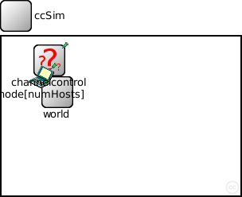
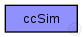
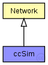

This documentation is released under the Creative Commons license
This documentation is released under the Creative Commons licensebasic example simulation for the Mobility Framework
The following diagram shows usage relationships between types. Unresolved types are missing from the diagram. Click here to see the full picture.
The following diagram shows inheritance relationships for this type. Unresolved types are missing from the diagram. Click here to see the full picture.
| Network (compound module) |
Author: Karl Wessel |
| Name | Type | Default value | Description |
|---|---|---|---|
| playgroundSizeX | double |
x size of the area the nodes are in (in meters) |
|
| playgroundSizeY | double |
y size of the area the nodes are in (in meters) |
|
| playgroundSizeZ | double |
z size of the area the nodes are in (in meters) |
|
| numHosts | double |
total number of hosts in the network |
| Name | Value | Description |
|---|---|---|
| display | bgb=$playgroundSizeX,$playgroundSizeY,white,,;bgp=10,10 | |
| isNetwork |
| Name | Type | Default value | Description |
|---|---|---|---|
| world.coreDebug | bool |
debug switch for the base framework |
|
| world.useTorus | bool |
use the playground as torus? |
|
| world.use2D | bool |
use a 2-dimensional world? |
|
| channelcontrol.coreDebug | bool |
debug switch for core framework |
|
| channelcontrol.sendDirect | bool |
send directly to the node or create separate gates for every connection |
|
| channelcontrol.pMax | double |
maximum sending power used for this network [mW] |
|
| channelcontrol.sat | double |
minimum signal attenuation threshold [dBm] |
|
| channelcontrol.alpha | double |
minimum path loss coefficient |
|
| channelcontrol.carrierFrequency | double |
minimum carrier frequency of the channel [Hz] |
|
| node.blackboard.coreDebug | bool |
debug switch for the base framework |
|
| node.mobility.coreDebug | bool |
debug switch for the core framework |
|
| node.mobility.x | double |
x coordinate of the nodes' position (-1 = random) |
|
| node.mobility.y | double |
y coordinate of the nodes' position (-1 = random) |
|
| node.mobility.z | double |
z coordinate of the nodes' position (-1 = random) |
|
| node.nic.phy.usePropagationDelay | bool |
// basic example simulation for the Mobility Framework network ccSim extends Network { parameters: }
This documentation is released under the Creative Commons license